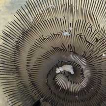
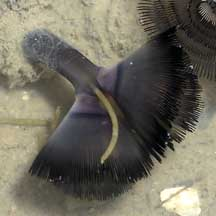
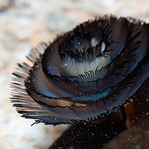

|
|
| worms text index | photo index |
| worms > Phylum Phoronida |
| Cerianthid
phoronid worm Phoronis australis* Phylum Phoronida updated Oct 2019
Where seen? Literally overshadowed by their more glamorous hosts, this tiny fluffy worm is commonly seen with cerianthids on our northern shores. Often several can be seen near one cerianthid. Very shy, the worms retract at the slightest sign of danger. There's a better chance of seeing them at night. What are phoronid worms? Phoronid worms are unsegmented worms belonging to Phylum Phoronida. This is a small phylum with less than 20 species. They build and live inside tubes made of chitin. Phoronis australis is thus far, the only phoronid known to be encountered with cerianthids and it is found in all warm temperate to tropical coasts from the intertidal to deeper waters. Features: Phoronis australis has a pair of feathery spiralling tentacles (diameter about 2cm). The body is long, unsegemented and worm-like. Those seen on our shores are grey or pinkish black, but elsewhere white ones are also seen. Most phoronids build a tube that is made of chitin (the same substance that insect skeletons are made of). More about tubeworms in general. Sometimes confused with fan worms. Fan worms are segmented worms belonging to Phylum Annelida, Class Polychaeta. More on how to tell apart animals with a ring of feathery tentacles. According to Gosliner, the body of Phoronis australis penetrates the tissues of the cerianthid but the phoronid worm is not parasitic and does not absorb nutrients from the cerianthid directly. What do they eat? Phoronids are filter feeders, creating a current of water through their spiral of tentatcles. Edible bits are trapped in mucus on the tentacles. Phoronid babies: Some phoronids can reproduce by budding or splitting into half. They also reproduce by producing eggs and sperm. It is believed that the lifespan of phoronids is only about one year. Phoronis australis is a hermaphrodite. Phoroneus the hero: In Greek mythology, Phoroneus is often said to be the son of a river god and ocean nymph. He is credited for being the first to unite the Greeks as one people. Previously, they had lived in scattered groups. |
 Changi, Jun 03 |
 Are the white stuff eggs? Changi, Aug 05 |
 The anus is at the top of the body in between the two 'fans'. Changi, Aug 05 |
*Tentative identification. Species are difficult to positively identify without close examination.
On this website, they are grouped by external features for convenience of display.
| Cerianthid phoronid worms on Singapore shores |
On wildsingapore
flickr
|
| Other sightings on Singapore shores |
 |
| Acknowledgement With grateful thanks to Leslie H. Harris of the Natural History Museum of Los Angeles County for comments on the identity of this worm. Links
References
|